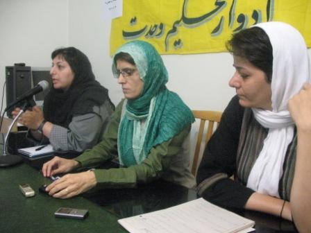

|
|
گزارشی از نشست بررسی نتایج ائتلاف علیه لایحه حمایت از خانواده/ یک گام به پیش
يكشنبه24 شهریور 1387
تغییر برای برابری : نشست نقد و بررسی لایحه حمایت از خانواده 21 شهریور به دعوت کمیته زنان دفترادوار تحکیم وحدت در محل ادوار برگزار شد. در این نشست گروه های مختلف زنان از طیف های گوناگون جنبش زنان گرد هم آمدند تا با تحلیل و جمع بندی فعالیت های زنان در ائتلاف علیه لایحه موسوم به حمایت از خانواده راهکارهای پیش رو را برای ادامه روند نقد این لایحه مورد بررسی قرار دهند. مريم بهروزي ، دبير جامعه زينب(س) و ازمنتقدان فعال لایحه به دليل شركت در مراسم ديدار با رييس مجلس براي تشكر از حذف برخي مواد لايحه در اين نشست حاضر نشد.
این نشست در قالب سه پنل با حضور حقوقدانان، روزنامه نگاران و نمایندگانی از گروه های فعال در ائتلاف برگزار شد.
حذف مواد 23، 25 واصلاح ماده 53 اولین دستاورد ائتلاف
گروه های مختلف زنان از حقوقدانان، روزنامه نگاران، فعالین کمپین یک میلیون امضا و فعالان اجتماعی سیاسی در نشست جمع بندي لايحه حمايت از خانواده، با مثبت قلمداد کردن این ائتلاف کم سابقه در میان فعالین طیف های مختلف فکری جنبش زنان، تاکید داشتند که با وجود حذف برخی از مواد لایحه موسوم به حمایت از خانواده نقد ها و اعتراضات تا دستیابی به نتیجه مطلوب همچنان ادامه خواهد داشت.

فریده غیرت: این لایحه تنها آیین دادرسی دادگاه های خانواده است
فریده غیرت، وکیل دادگستری وحقوقدان اولین سخنران این نشست بود که با بررسی حقوقی لایحه حمایت از خانواده، نقدهای کارشناسانه خود به این لایحه را ارائه کرده و اعلام کرد حذف چند ماده مورد مناقشه در این لایحه به معنای عدم وجود اشکالات و ابهامات دیگر در لایحه نیست و تصویب این لایحه با شکل فعلی به معنای حمایت از خانواده نخواهد بود و این لایحه ضد خانواده است.
غیرت گفت:"بر عکس تصوری که می شود مرکزیت خانواده مرد نیست بلکه مرکز ثقل خانواده زن است .زن اگر دارای حقوقی می بود و تحت چتر حمایتی قانون بود شوهر راضی و فرزندان راضی را تربیت می کرد و تحویل جامعه می داد." او تاکید کرد : "ایجاد زمینه های مساعد برای شخصیت زن و احیای حقوق مادی و معنوی،حمایت از مادران به ویژه در دوران بارداری و حضانت فرزند و حمایت از کودکان بی سرپرست، ایجاد دادگاه صالح برای حفظ کیان و بقای خانواده،ایجاد بیمه خاص بیوگان و زنان سالمند و بی سرپرست و اعطای قیمومت فرزندان به مادران شایسته در جهت قبطه آنها در صورت نبودن ولی شرع."
این حقوقدان با اشاره به اصل 21 قانون اساسی که گفته می شود مبنای تدوین لایحه موسوم به حمایت از خانواده قرار گرفته است تصریح کرد: "در گزارش توجیهی این لایحه از طرف قوه قضاییه به اصل 21 قانون اساسی استناد شده درحالی که اجرای تنها یک بند از پنج بند اصل 21 در لایحه آمده که آن هم متاسفانه فقط آیین دادرسی دادگاههای خانواده است."
اعظم نوری: با وجود دادگاه خانواده چه نیازی به شورای حل اختلاف است؟
اعظم نوری از زنان اصلاح طلب با اشاره به فعالیت های انجام شده در نقد لایحه به برگزاری نشست با فراکسیون اقلیت و فراکسیون زنان مجلس و همچنین شرکت در برنامه تلویزیونی اردیبهشت تاکید کرد. او با ذکر اصل دهم قانون اساسی گفت که طبق این ماده خانواده واحد بنیادین جامعه است و همه قوانین باید در جهت آسایش این نهاد باشد. به گفته او وظیفه دولت پاسداری از نهاد خانواده و تسهیل ازدواج برای نسل جوان است نه تهیه ماده ای برای ازدواج مجدد.
به گفته نوری ایجاد مراکز مشاوره در کنار دادگاه ها اقدام خوبی است طبق آنچه که دولت قید کرده دعوای خانوادگی ابتدا به دادگاه می رود و اگر قاضی تشخیص داد به مراکز مشاوره ارجاع داده می شود حال آن که مشکلات باید ابتدا در مراکز مشاوره مطرح شود. او همچنین درباره واگذاری دعاوی خانواده به شورای حل اختلاف نیز پیشنهاد حذف این ماده را داد:«اگر دادگاه خانواده هست پس چه نیازی به شورای حل اختلاف است؟»

آسیه امینی : چند همسری فصل مشترک ما بود
در پنل دوم این نشست که روزنامه نگاران حضور داشتند آسیه امینی از تجربه خود دئر شرکت در این ائتلاف سخن گفت. به گفته او این تجربه نشان داد هنوز می توان امیدوار بود که افراد جدا از اختلاف ها و ایدئولوژی های شان برای هدفی مشترک تلاش کنند. ای کاش آزادی بیان هم می توانست مانند چندهمسری فصل مشترک همه ما باشد.
او با اشاره به خلاهای قانونی ای که موجب افزایش جرم و جنایت در خانواده ها می شود گفت :«جرم بیش از 90 درصد زنان بخاطر خلا های قانونی بوده است. وقتی وارد جزییات زندگی زنی محکوم به سنگسار می شوی می بینی که او بارها و بارها برای حل مشکل خانوادگی به دادگاه ، مراجع قانونی و حتی ریش سفیدها مراجعه کرده اما پاسخی نگرفته است. باید پرسید چرا این لایحه قانونی برای آنها و یا قتل های ناموسی دیده نشده است؟»
ژیلا بنی یعقوب: اگر با هم باشیم پیروز هستیم
ژیلا بنی یعقوب روزنامه نگار و فعال حقوق زنان درباره روند شکل گیری این ائتلاف می گفت :«اولین جرقه تشکیل ائتلاف بعد از انتشار خبر تصویب کلیات لایحه در کمیسیون قضایی بود که معترضان از طریق ایمیل بحث هایشان را درباره لایحه مطرح کردند و به تدریج اعضای این گروه ایمیلی گسترده شد به طوری که ائتلاف اولیه 120 شامل نفر از فعالان سیاسی، روزنامه نگاران و حتی ایرانیان خارج از کشور بود.»
بنی یعقوب می گوید:«تجربه این ائتلاف به من آموخت که با وجود همه اختلاف ها می توان برای یک هدف مشترک کار کرد. با وجود بسیاری از سوء تفاهم ها و اختلاف هایی که در جنبش زنان وجود داشت اما زنان در این ائتلاف در کنار یکدیگر علیه لایحه موسوم به لایحه حمایت از خانواده کار کردند. به طوری که فرد فعال در احزاب سیاسی با دیدن این ائتلاف اعتراف کرد که از جنبش زنان دارد می آموزد و این جنبش را پر از ایده و خلاقیت خواند.» بنی یعقوب با تاکید بر حضور همه طیف ها و حتی صدا وسیما در اعتراض به لایحه حمایت از خانواده گفت :«اگر با هم باشیم می توانیم پیروز باشیم حتی اگر این پیروزی کوچک باشد.»
وی توزیع بروشورهایی به منظور آگاهی بخشی افراد جامعه درباره این لایحه، تهیه برچسب هایی که روی آنها شعارهایی علیه لایحه نوشته شده بود، ایجاد وبلاگی برای اطلاع رسانی دقیق درباره حوادث مربوط به لایحه، دیدار با نمایندگان مجلس و برگزاری نشست های مختلف را از جمله فعالیت های انجام شده در این ائتلاف خواند.
***
محبوبه حسین زاده از دیگر روزنامه نگارانی است که در اعتراض به این لایحه بارها و بارها گزارش نوشته است و تلاش زیادی را چه در عرصه اطلاع رسانی و چه در زمینه طرح انتقادها با مسئولان دولتی و نمایندگان مجلس به کار برد. او با حضور در این نشست به مشکلات نشریات در انعکاس مباحث مربوط به لایحه پرداخت و از روزنامه هایی سخن گفت که با وجود سانسور و سختی های فراوان علیه لایحه نوشتند.

در پنل سوم نمایندگان گروههای مادران صلح، میدان زنان، کمیسیون زنان دفتر تحکیم و کمپین یک میلیون امضا برای تغییر قوانین نابرابر از حاضران سومین پنل این نشست بودند.
مینو مرتاضی فعال ملی مذهبی با اشاره به چگونگی شکل گیری سرمایه های اجتماعی در یک جنبش می گوید:"سرمایه های اجتماعی ما همان مردم هستند که در صورت وجود یک درد یا شادی مشترک دور هم جمع می شوند.این درد یا شادی مشترک خاصیت همگرا شدن دارد." به اعتقاد مرتاضی لایحه حمایت از خانواده درد مشترکی بود که توانست همه طیف ها اعم از مذهبی، سکولار و حتی سنتی ترین تفکر در حوزه های علمیه را دور خود جمع کند.
زهرا مینویی از اعضای گروه میدان زنان نیز از اقدام های این گروه برای مقابله با لایحه حمایت از خانواده گفت و به انتشار کارت پستال هایی به نام "نه به لایحه خانواده" اشاره کرد و گفت در حال حاضر این گروه در صدد تهیه پیشنهادهای اصلاحی لایحه هستند تا آن را به مجلس ارسال کند.
نسیم سرابندی: سعی ما در برانگیختن حساسیت دانشجویان نسبت به لایحه بود
نسیم سرابندی نماینده کمیسیون زنان تحکیم وحدت سخنران بعدی گفت :«لایحه حمایت از خانواده به دلیل نقدهای فراوانی که به آن وارد بود اعتراض فعالین را برانگیخت و ائتلافی را رقم زد که در آنها تنها زنان سهیم بودند بلکه نیروهای جامعه مدنی، روزنامه نگاران، نیروهای دانشجویی و سیاسی نیز حضور داشتند. کمیسیون زنان تحکیم هم به عنوان یک نهاد دانشجویی که مدافع حقوق زنان و دختران دانشجوست تلاش کرد تا با این ائتلاف در اموری چون پخش بروشور، دیدار با نمایندگان، صدور بیانیه، برگزاری کارگاه نقد لایحه و جمع آوری امضا برای فراخوان اعتراض همراهی و مشارکت نماید. سعی ما در برانگیختن حساسیت دانشجویان نسبت به لایحه بود. »
وی در ادامه با اشاره به اینکه عرصه دانشگاه به دلیل ورورد شصت درصدی دختران سرنوشت ساز است افزود:« این ورود فزاینده اگر با آگاه سازی دختران نسبت به حقوق برابر همراه نباشد نتایج مثبتی نخواهد داشت. اما مدافعان لایحه حمایت از خانواده در خصوص اثرات مثبت چند همسری مطالبی در سایت ها منتشر کردند که نمایانگر کنه تفکر و دیدگاه آنان است. تفکری که در اداره کشور نیز جریان دارد و خطری جدی است و در چند سال اخیر به دنبال اجرا کردن تبعیض و تفکیک جنسیتی و حذف منتقدین در عرصه دانشگاه نیز بوده و حال نیز برای تصویت لایحه ای ضد زن می کوشد.» وی گفت از دولت انتظار می رفت که قوانینی مترقی و پیشرو را به تصویب برساند. در صورتی که مجلس هفتم و هشتم گام هایی در جهت برگشت به عقب برداشته اند. گرچه ماده 23، 25 و مورد 4 ماده 53 حذف شد اما اشکالات دیگر لایحه بی پاسخ ماند و ما زنان باید اقداماتی را برای اعتراض به مواد دیگر در فاصله شور اول و دوم انجام دهیم.»
آیدا سعادت : گستردگی جغرافیایی کمپین برفراگیر شدن اعتراض علیه لایحه موثر بوذ
آیدا سعادت از اعضای کمپین یک میلیون امضا نیز با ارائه گزارشی از فعالیت های گروه های مختلف کمپین در این اعتراض جمعی گفت :« نقد لایحه از بدو طرح آن در تیرماه سال گذشته مد نظر فعالان کمپین قرار داشت و به همین منظور اولین نشست اعتراضی علیه تصویب لایحه با نقد آن از جنبه های حقوقی، جامعه شناختی و روانشناسی برگزار شد و همچنین اولین بیانیه اعتراضی نیز در همان نشست تهیه شد و بعدا به امضای حدود 2500 نفر رسید» او گفت :«سایه سنگین دو ماده 23 و 25 موجب مطرح نشدن دیگر ماده های این لایحه شد که باید با تلاش در این ائتلاف تک تک موادی را بررسی کنیم که علیه زنان و خانواده است.»
وی با تاکید بر تاثیر گستردگی جغرافیایی کمپین یک میلیون امضا در فراگیر شدن اعتراض علیه لایحه حمایت خانواده در بسیاری از شهرها و برخی کشور ها گفت: «کنشگران کمپین در تهران و دیگر شهرها با هدف عمومی کردن اعتراض علیه لایحه موسوم به حمایت از خانواده در کنار پخش دفترچه های کمپین و جمع اوری امضا برشور و فراخوان ائتلاف علیه لایحه را نیز را در سطح وسیعی توزیع کردند. و در دیدار با نمایندگان مجلس نیز حضور فعال داشتند»

فخر السادات محتشمی پور: خود ائتلاف بیش از دستاوردهایش ارزشمند است
فخر السادات محتشمی پور از زنان اصلاح طلب با بیان این جمله "خود ائتلاف بیش از دستاوردهایش ارزشمند است"، از گروههای گمنامی یاد کرد که در پیشبرد هدف یعنی اعتراض دربرابر لایحه کارهای بسیاری انجام دادند هرچند نامی از آنها برده نشد. وی گفت:« سهیلا جلودار زاده اولین فردی بود که خبر وجود لایحه در مجلس هفتم را داد و از همان زمان ما نیز وارد مذاکره و لابی با نمایندگان مجلس شدیم. همچنین برگزاری دو جلسه بررسی فقهی و حقوقی و جلسه نقد فیلم پیامک از دیار باقی هم در راستای اعتراض به لایحه برگزار شد.»